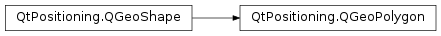

QGeoPolygon¶
Note
This class was introduced in Qt 5.10.
Synopsis¶
Functions¶
- def
__eq__(other) - def
__ne__(other) - def
addCoordinate(coordinate) - def
containsCoordinate(coordinate) - def
coordinateAt(index) - def
insertCoordinate(index, coordinate) - def
length([indexFrom=0[, indexTo=-1]]) - def
path() - def
removeCoordinate(coordinate) - def
removeCoordinate(index) - def
replaceCoordinate(index, coordinate) - def
setPath(path) - def
size() - def
translate(degreesLatitude, degreesLongitude) - def
translated(degreesLatitude, degreesLongitude)
Detailed Description¶
The
PySide2.QtPositioning.QGeoPolygonclass defines a geographic polygon.The polygon is defined by an ordered list of QGeoCoordinates representing its perimeter.
Each two adjacent elements in this list are intended to be connected together by the shortest line segment of constant bearing passing through both elements. This type of connection can cross the date line in the longitudinal direction, but never crosses the poles.
This is relevant for the calculation of the bounding box returned by
QGeoShape.boundingGeoRectangle()for this shape, which will have the latitude of the top left corner set to the maximum latitude in the path point set. Similarly, the latitude of the bottom right corner will be the minimum latitude in the path point set.This class is a
Q_GADGET(). It can be directly used from C++ and QML .
-
class
PySide2.QtPositioning.QGeoPolygon¶ -
class
PySide2.QtPositioning.QGeoPolygon(other) -
class
PySide2.QtPositioning.QGeoPolygon(other) -
class
PySide2.QtPositioning.QGeoPolygon(path) Parameters: - other –
PySide2.QtPositioning.QGeoPolygon - path –
Constructs a new, empty geo path.
Constructs a new geo path from the contents of
other.Constructs a new geo path from the contents of
other.Constructs a new geo
pathfrom a list of coordinates.- other –
-
PySide2.QtPositioning.QGeoPolygon.addCoordinate(coordinate)¶ Parameters: coordinate – PySide2.QtPositioning.QGeoCoordinateAppends
coordinateto the polygon.
-
PySide2.QtPositioning.QGeoPolygon.containsCoordinate(coordinate)¶ Parameters: coordinate – PySide2.QtPositioning.QGeoCoordinateReturn type: PySide2.QtCore.boolReturns true if the polygon’s perimeter contains
coordinateas one of the elements.
-
PySide2.QtPositioning.QGeoPolygon.coordinateAt(index)¶ Parameters: index – PySide2.QtCore.intReturn type: PySide2.QtPositioning.QGeoCoordinateReturns the coordinate at
index.
-
PySide2.QtPositioning.QGeoPolygon.insertCoordinate(index, coordinate)¶ Parameters: - index –
PySide2.QtCore.int - coordinate –
PySide2.QtPositioning.QGeoCoordinate
Inserts
coordinateat the specifiedindex.- index –
-
PySide2.QtPositioning.QGeoPolygon.length([indexFrom=0[, indexTo=-1]])¶ Parameters: - indexFrom –
PySide2.QtCore.int - indexTo –
PySide2.QtCore.int
Return type: PySide2.QtCore.doubleReturns the length of the polygon’s perimeter, in meters, from the element
indexFromto the elementindexTo. The length is intended to be the sum of the shortest distances for each pair of adjacent points.- indexFrom –
-
PySide2.QtPositioning.QGeoPolygon.__ne__(other)¶ Parameters: other – PySide2.QtPositioning.QGeoPolygonReturn type: PySide2.QtCore.boolReturns whether this geo path is not equal to
other.
-
PySide2.QtPositioning.QGeoPolygon.__eq__(other)¶ Parameters: other – PySide2.QtPositioning.QGeoPolygonReturn type: PySide2.QtCore.boolReturns whether this geo path is equal to
other.
-
PySide2.QtPositioning.QGeoPolygon.path()¶ Return type: Returns all the elements. Equivalent to
QGeoShape.center(). The center coordinate, in case of aPySide2.QtPositioning.QGeoPolygon, is the center of its bounding box.
-
PySide2.QtPositioning.QGeoPolygon.removeCoordinate(coordinate)¶ Parameters: coordinate – PySide2.QtPositioning.QGeoCoordinateRemoves the last occurrence of
coordinatefrom the polygon.
-
PySide2.QtPositioning.QGeoPolygon.removeCoordinate(index) Parameters: index – PySide2.QtCore.intRemoves element at position
indexfrom the polygon.
-
PySide2.QtPositioning.QGeoPolygon.replaceCoordinate(index, coordinate)¶ Parameters: - index –
PySide2.QtCore.int - coordinate –
PySide2.QtPositioning.QGeoCoordinate
Replaces the path element at the specified
indexwithcoordinate.- index –
-
PySide2.QtPositioning.QGeoPolygon.setPath(path)¶ Parameters: path – Sets the
pathfrom a list of coordinates.
-
PySide2.QtPositioning.QGeoPolygon.size()¶ Return type: PySide2.QtCore.intReturns the number of elements in the polygon.
-
PySide2.QtPositioning.QGeoPolygon.translate(degreesLatitude, degreesLongitude)¶ Parameters: - degreesLatitude –
PySide2.QtCore.double - degreesLongitude –
PySide2.QtCore.double
Translates this geo path by
degreesLatitudenorthwards anddegreesLongitudeeastwards.Negative values of
degreesLatitudeanddegreesLongitudecorrespond to southward and westward translation respectively.- degreesLatitude –
-
PySide2.QtPositioning.QGeoPolygon.translated(degreesLatitude, degreesLongitude)¶ Parameters: - degreesLatitude –
PySide2.QtCore.double - degreesLongitude –
PySide2.QtCore.double
Return type: Returns a copy of this geo polygon translated by
degreesLatitudenorthwards anddegreesLongitudeeastwards.Negative values of
degreesLatitudeanddegreesLongitudecorrespond to southward and westward translation respectively.- degreesLatitude –
© 2018 The Qt Company Ltd. Documentation contributions included herein are the copyrights of their respective owners. The documentation provided herein is licensed under the terms of the GNU Free Documentation License version 1.3 as published by the Free Software Foundation. Qt and respective logos are trademarks of The Qt Company Ltd. in Finland and/or other countries worldwide. All other trademarks are property of their respective owners.